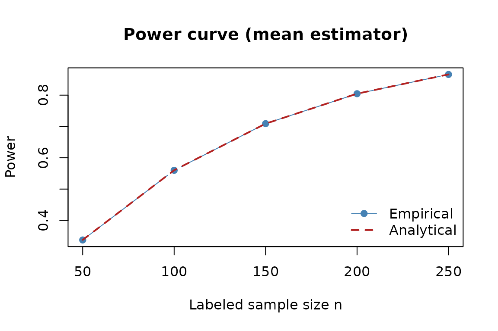
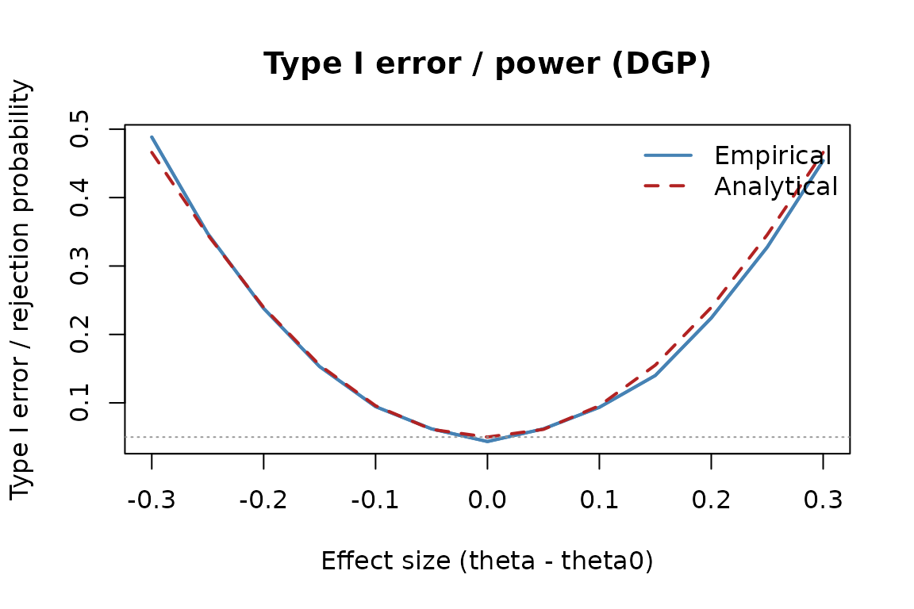

intro-ppi.Rmdpppower provides analytical and Monte Carlo tools for
prediction-powered inference (PPI). We cover two main
workflows:
Notation
We test the null hypothesis H_0: = _0 versus a two-sided alternative, where: - = - _0: effect size of interest - N: unlabeled sample size (used to estimate [f(X)]) - n: labeled sample size (used to correct prediction error) - f^2 = (f(X)): variance of the model prediction - {}^2 = (Y - f(X)): residual variance after prediction
These quantities are typically estimated from prior data, pilot studies, or external models — but for planning and power analysis, we can specify them directly.
library(pppower)
# Study design parameters
N <- 2000 # unlabeled sample size
n <- 200 # labeled sample size
alpha <- 0.05 # two-sided significance level
sim <- 2000 # Monte Carlo replicates
# Population-level quantities (from prior knowledge, pilot data, or assumptions)
theta0 <- 0.0 # null value of the mean
delta <- 0.15 # effect size (true mean - theta0)
var_f <- 0.45 # variance of f(X)
var_res <- 0.80 # residual varianceWith these inputs, we can calculate the analytical power of the PPI mean estimator using the closed-form normal approximation:
power_ppi_mean() implements the normal-theory power
formula, using the standard error
.
power_ppi_mean(
delta = delta,
var_f = var_f,
var_res = var_res,
N = N,
n = n,
alpha = alpha
)
#> [1] 0.6359878simulate_power() mimics the null distribution with Monte
Carlo samples of the test statistic.
simulate_power(
delta = delta,
N = N,
n = n,
alpha = alpha,
var_f = var_f,
var_res = var_res,
R = sim
)
#> Exact_PP Empirical_PP
#> 0.6359878 0.6360000pppower:::simulate_power_ppi_mean() repeatedly resamples
labeled/unlabeled splits from the synthetic population, recomputing the
PPI estimator each time.
moments_ppi <- list(
delta = delta,
var_f = var_f,
var_res = var_res
)
# Run the full Monte Carlo simulation and compare with analytical power
mc_pp <- pppower:::simulate_power_ppi_mean(
R = sim,
n = n,
N = N,
alpha = alpha,
family = gaussian(),
moments = moments_ppi,
theta0 = theta0,
seed = 2024
)
# Results: empirical rejection rate (Monte Carlo) vs. analytical formula
mc_pp$empirical_power
#> [1] 0.6325
mc_pp$analytical_power
#> [1] 0.6359878
c_list <- list(
c1 = c(1, 0, 0), # intercept
c2 = c(0, 1, 0), # slope on x1
c3 = c(0, 0, 1), # slope on x2
c4 = c(0, 1, -1), # difference x1 - x2
c5 = c(0, 0.5, 0.5) # average (x1 + x2)/2
)
beta_true <- c(0.7, 0.4, -0.3)
p <- length(beta_true)
# Choose a null for each contrast
theta0_map <- c(
c1 = 0.0,
c2 = 0.25,
c3 = 0.0,
c4 = 0.0,
c5 = 0.0
)
# Variance components and matrices
sigma_y2_pop <- 1.0
sigma_f2_pop <- 0.45
H_pop <- diag(p)
Sigma_YY_pop <- sigma_y2_pop * H_pop
Sigma_ff_pop <- sigma_f2_pop * H_pop
Sigma_Yf_pop <- matrix(0, nrow = p, ncol = p)
set.seed(20240625L)
run_one_contrast <- function(name, c_vec, theta0) {
delta_c <- as.numeric(c(c_vec %*% beta_true) - theta0)
moments_ols <- list(
delta = delta_c,
H = H_pop,
Sigma_YY = Sigma_YY_pop,
Sigma_ff = Sigma_ff_pop,
Sigma_Yf = Sigma_Yf_pop
)
res <- pppower:::simulate_power_ppi_ols(
R = sim,
n = n,
N = N,
contrast = c_vec,
alpha = alpha,
family = gaussian(),
moments = moments_ols,
seed = sample.int(.Machine$integer.max, 1)
)
mc_se <- sqrt(res$analytical_power * (1 - res$analytical_power) / sim)
tol <- max(3 * mc_se, 0.01)
diff <- abs(res$empirical_power - res$analytical_power)
data.frame(
contrast = name,
theta0 = theta0,
delta = delta_c,
analytical = res$analytical_power,
empirical = res$empirical_power,
abs_diff = diff,
tol = tol,
pass = diff < tol,
stringsAsFactors = FALSE
)
}
res_list <- mapply(
run_one_contrast,
name = names(c_list),
c_vec = c_list,
theta0 = theta0_map[names(c_list)],
SIMPLIFY = FALSE
)
ols_multi <- do.call(rbind, res_list)
ols_multi
#> contrast theta0 delta analytical empirical abs_diff tol pass
#> c1 c1 0.00 0.70 1.0000000 1.000 9.992007e-16 0.01000000 TRUE
#> c2 c2 0.25 0.15 0.5641160 0.564 1.160254e-04 0.03326411 TRUE
#> c3 c3 0.00 -0.30 0.9887753 0.989 2.247093e-04 0.01000000 TRUE
#> c4 c4 0.00 0.70 0.9999998 1.000 2.327221e-07 0.01000000 TRUE
#> c5 c5 0.00 0.05 0.1700750 0.170 7.504575e-05 0.02520264 TRUE
c_list <- list(
c1 = c(1, 0, 0),
c2 = c(0, 1, 0),
c3 = c(0, 0, 1),
c4 = c(0, 1, -1),
c5 = c(0, 0.5, 0.5)
)
beta_true <- c(0.7, 0.4, -0.3)
p <- length(beta_true)
theta0_map <- c(
c1 = 0.0,
c2 = 0.25,
c3 = 0.0,
c4 = 0.0,
c5 = 0.0
)
sigma_y2_pop <- 1.0
sigma_f2_pop <- 0.45
H_pop <- diag(p)
Sigma_YY_pop <- sigma_y2_pop * H_pop
Sigma_ff_L_pop <- sigma_f2_pop * H_pop
Sigma_ff_U_pop <- sigma_f2_pop * H_pop
Sigma_Yf_pop <- sigma_f2_pop * H_pop
set.seed(20240626L)
run_one_contrast_ppiplus <- function(name, c_vec, theta0) {
delta_c <- as.numeric(c(c_vec %*% beta_true) - theta0)
moments_ppiplus <- list(
delta = delta_c,
H_L = H_pop,
H_U = H_pop,
Sigma_YY = Sigma_YY_pop,
Sigma_ff_l = Sigma_ff_L_pop,
Sigma_ff_u = Sigma_ff_U_pop,
Sigma_Yf = Sigma_Yf_pop
)
res <- pppower:::simulate_power_ppi_pp_ols(
R = sim,
n = n,
N = N,
contrast = c_vec,
alpha = alpha,
family = gaussian(),
lambda_type = "plugin",
moments = moments_ppiplus,
seed = sample.int(.Machine$integer.max, 1)
)
mc_se <- sqrt(res$analytical_power * (1 - res$analytical_power) / sim)
tol <- max(3 * mc_se, 0.01)
diff <- abs(res$empirical_power - res$analytical_power)
data.frame(
contrast = name,
theta0 = theta0,
delta = delta_c,
analytical = res$analytical_power,
empirical = res$empirical_power,
abs_diff = diff,
tol = tol,
pass = diff < tol,
avg_lambda = res$avg_lambda,
stringsAsFactors = FALSE
)
}
res_list_ppiplus <- mapply(
run_one_contrast_ppiplus,
name = names(c_list),
c_vec = c_list,
theta0 = theta0_map[names(c_list)],
SIMPLIFY = FALSE
)
ols_ppiplus_multi <- do.call(rbind, res_list_ppiplus)
ols_ppiplus_multi
#> contrast theta0 delta analytical empirical abs_diff tol pass
#> c1 c1 0.00 0.70 1.0000000 1.0000 0.000000e+00 0.01000000 TRUE
#> c2 c2 0.25 0.15 0.7880399 0.7880 3.992846e-05 0.02741621 TRUE
#> c3 c3 0.00 -0.30 0.9998140 1.0000 1.859695e-04 0.01000000 TRUE
#> c4 c4 0.00 0.70 1.0000000 1.0000 4.458656e-13 0.01000000 TRUE
#> c5 c5 0.00 0.05 0.2554786 0.2555 2.135436e-05 0.02925648 TRUE
#> avg_lambda
#> c1 0.9090909
#> c2 0.9090909
#> c3 0.9090909
#> c4 0.9090909
#> c5 0.9090909power_curve_mean() sweeps over candidate labeled sample
sizes, while plot_type1_error_curve() draws empirical
vs. analytical rejection probabilities.
curve_fixed <- pppower:::power_curve_mean(
n_grid = seq(50, 250, by = 50),
delta = delta,
N = N,
var_f = var_f,
var_res = var_res,
alpha = alpha,
R = sim
)
curve_fixed
#> n power_empirical power_exact delta N alpha var_f var_res
#> 1 50 0.2180 0.2178530 0.15 2000 0.05 0.45 0.8
#> 2 100 0.3800 0.3799491 0.15 2000 0.05 0.45 0.8
#> 3 150 0.5205 0.5207690 0.15 2000 0.05 0.45 0.8
#> 4 200 0.6360 0.6359878 0.15 2000 0.05 0.45 0.8
#> 5 250 0.7270 0.7267850 0.15 2000 0.05 0.45 0.8
plot(
curve_fixed$n,
curve_fixed$power_empirical,
type = "b",
pch = 19,
col = "steelblue",
xlab = "Labeled sample size n",
ylab = "Power",
main = "Power curve (mean estimator)"
)
lines(curve_fixed$n, curve_fixed$power_exact, col = "firebrick", lwd = 2, lty = 2)
legend("bottomright", legend = c("Empirical", "Analytical"),
col = c("steelblue", "firebrick"), lty = c(1, 2), pch = c(19, NA), lwd = c(1, 2), bty = "n")
To study Type I error and power as a function of
,
use type1_error_curve_mean() or, for a fully simulated DGP,
type1_error_curve_mean_dgp():
curve_parametric <- type1_error_curve_mean_dgp(
effect_grid = seq(-0.5, 0.5, by = 0.05),
N = N,
n = n,
var_f = var_f,
var_res = var_res,
theta = 1.0,
alpha = 0.05,
R = 2000,
seed = 20240627L
)
pppower:::plot_type1_error_curve(
curve_parametric,
main = "Type I Error / Power Curve (Parametric, No Superpopulation)"
)
Let be the PPI-adjusted coefficient vector and the contrast of interest.
V_u/V_l are per-observation sandwich
covariances for the unlabeled (imputation) and labeled (rectifier)
regressions.
# Study design
N <- 2000 # unlabeled sample size
n <- 200 # labeled sample size
alpha <- 0.05
sim <- 2000
# True coefficient vector (assumed or estimated from prior data)
beta_true <- c(0.7, 0.4, -0.3, 0.2)
# Contrast vector for hypothesis test
c_vec <- c(0, 1, 0, 0) # test second coefficient
# Effect size (difference from null)
theta0 <- 0.25
delta <- as.numeric(t(c_vec) %*% beta_true - theta0)
# Variance components (assumed known from pilot data or prior studies)
sigma_y2 <- 1.0 # total variance of Y
sigma_f2 <- 0.45 # variance explained by predictor model
# Per-observation covariance matrices
p <- length(beta_true)
H_pop <- diag(p) # design matrix Hessian
Sigma_YY_pop <- sigma_y2 * H_pop # Var(Y)
Sigma_ff_pop <- sigma_f2 * H_pop # Var(f(X))
Sigma_Yf_pop <- sigma_f2 * H_pop # Cov(Y, f(X))We can compute the analytical power for the PPI-OLS estimator using these components:
power_ppi_ols(
delta = delta,
V_u = Sigma_ff_pop,
V_l = Sigma_YY_pop,
N = N,
n = n,
c = c_vec,
alpha = alpha
)
#> [1] 0.5458758Suppose we focus on x1:
moments_ols <- list(
delta = delta,
H = H_pop,
Sigma_YY = Sigma_YY_pop
)
ols_mc <- pppower:::simulate_power_ppi_ols(
R = sim,
n = n,
N = N,
contrast = c_vec,
alpha = alpha,
family = gaussian(),
moments = moments_ols,
seed = 20240625L
)
ols_mc$analytical_power
#> [1] 0.564116
ols_mc$empirical_power
#> [1] 0.564
abs(ols_mc$empirical_power - ols_mc$analytical_power)
#> [1] 0.0001160254
target <- 0.90
n_required_ppi_pp(
delta = delta,
N = N,
alpha = alpha,
power = target,
type = "regression",
lambda_mode = "oracle",
c = c_vec,
H_L = H_pop,
H_U = H_pop,
Sigma_YY = Sigma_YY_pop,
Sigma_ff_l = Sigma_ff_pop,
Sigma_ff_u = Sigma_ff_pop,
Sigma_Yf = Sigma_Yf_pop
)
#> [1] 283| Task | Functions |
|---|---|
| Generate cross-fitted superpopulation | simulate_crossfit_data() |
| Mean estimator power & calibration |
power_ppi_mean(), simulate_power(),
pppower:::simulate_power_ppi_mean()
|
| Mean estimator curves |
power_curve_mean(),
type1_error_curve_mean[_dgp](),
plot_type1_error_curve()
|
| Fit prediction-powered OLS |
ppi_ols_fit(), summary()
|
| OLS contrasts and power |
pppower:::ppi_ols_wald(), power_ppi_ols(),
pppower:::simulate_power_ppi_ols()
|
| Sample size | n_required_ppi_pp() |
Together these tools help you explore prediction quality, diagnose finite-sample effects, and plan labeled sample sizes for both mean and regression targets.